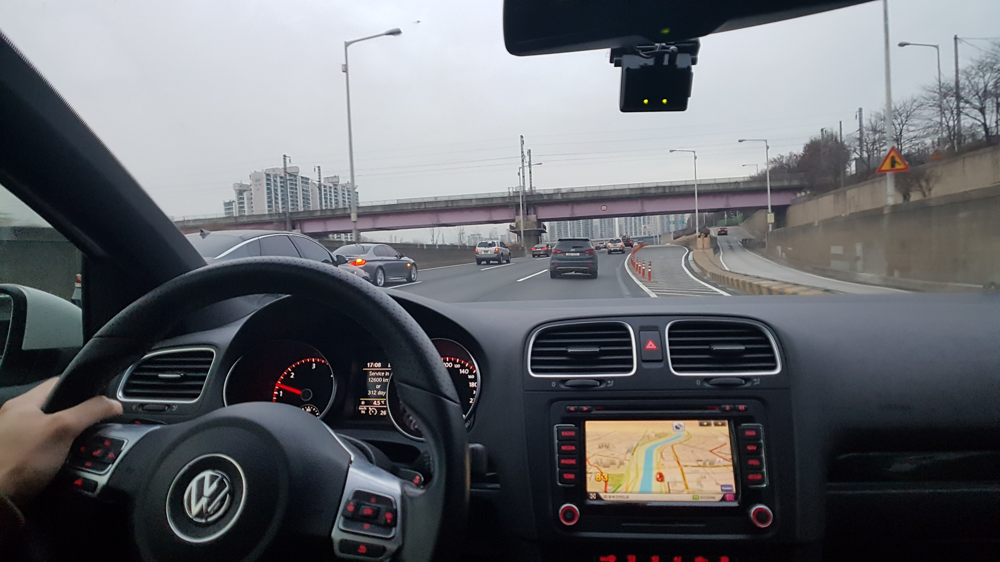
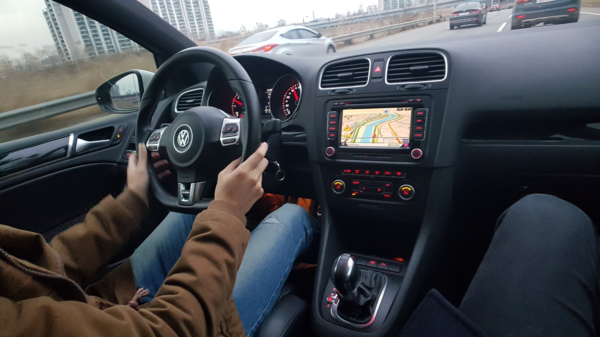
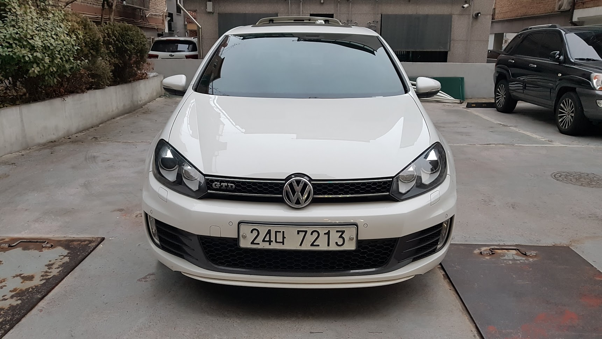

![Golf GTD MK6 : [첫차]](./20180121_183248-2.png)
거리에 수많은 차들이 다니지만, 사회 초년생에게는 그저 부러움의 대상이었다. 아무리 저렴한 차라도 몇백을 훌쩍 넘는 가격대에 실제로 타고 싶은 차들은 대부분이 천만 원이 넘는 차들이었기 때문이다.
‘다들 어떻게 차를 사는 걸까?’, ‘나는 언제쯤 차를 가질 수 있을까?’ 이런 생각이 가득했다.
차를 너무 좋아했지만, 현실의 벽에 부딪혀 차는 마음속에 잠시 접어두고 열심히 사회생활을 한 지 3년쯤 되던 해 차를 살 수 있는 돈을 마련했다. 돈을 모으는 3년간 sk 엔카를 SNS 보다 더 많이 들어간 것 같다.(아마 차를 좋아하는 수많은 사람들이 나처럼 하고 있지 않을까?) 엔카에서는 사고 유무, 주행거리, 연비, 년식, 튜닝 여부, 옵션, 가격대 등을 비교해서 가지고 싶은 차 중 구매 가능한 차들을 항상 리스트업 해두었다. 그리고 각종 동호회에 가입해서 실제 차주 분들을 통해 해당 차량의 고질병은 뭔지 장단점은 뭔지 수십 번 비교했다.
가장 관심이 많이 갔던 골프 6세대 경우 10km 즈음에 타이밍 벨트 교체를 해주어야 하는데 비용이 꽤 크다. 동호회나 건너 지인들 차를보면 15만km는 거뜬히 타는 모델임은 익히 알고 있었기 때문에 만약 타이밍 벨트 교체가 되어있다면 교체가 안 되어 있는 7만 km 차량보다 9만 km 정도의 차량을 조금 더 저렴한 값에 구매하는 게 더 좋을 수도 있었다.
BMW 1시리즈 쿠페나 해치백도 생각하고 있었는데 구해 하려고 고민했던 골프와 달리 타이밍 벨트가 체인으로 반영구 적이라 좋아 보였다. 하지만 특정 연도 모델은 체인이 끊어지면서 실린더를 뚫고 나가는 아주 위험한 결함이 있었다. 이 부분은 BMW에서 리콜을 진행한 걸로 확인을 했고, 이를 근거로 리콜이 이뤄진 차량인지를 따져 합리적인 가격의 차량을 후보로 선택할 수 있었다.
그 즈음해서 친구들도 차를 하나 둘 구매하기 시작했다. 아반떼를 구매한 친구도 있었고 320d 같은 외제 차를 구매한 친구도 있었다. 차를 구매한 친구들은 만족도가 너무 좋다며 빨리 구매할 것을 권유했다. 친구들은 매 주말 전국으로 맛집 투어를 가거나 평일 저녁에 서울 근교 드라이브를 가고 금요일 저녁에 급으로 강원도나 부산으로 여행을 떠나기도 했다.
하지만 나에겐 여전히 큰돈이었기에 다시 2년간 여유 자금을 조금 더 모았고 드디어 차를 사기로 마음을 굳혔다.
큰 결정을 한 날인지라 가입한 동호회에 글까지 남겨놨다..
📝 오늘 GTD 구매하러 갑니다!!! 가즈아
수년간 마음속에 있던 차들은 BMW 1Series, VW Golf GTI/GTD MK6, 아반떼 스포츠, 현대 i30 이렇게 4개였다. 매물 여부와 가격대 등 수십 가지 항목을 비교하여 후보를 고른다음 바로 매매단지로 향했다.
중고차 구매가 처음이라 경황이 없어 사진찍을 생각도 못 하고 차량 상태 확인 후 바로 구매를 진행했다.
항상 내 돈으로 직접 차를 사는 순간은 어떤 기분일지 궁금했는데 짜릿하다기보다는 어딘지 모를 묘한 기분이 들었다.


실내는 내비게이션까지 완전 순정으로 아주 상태가 좋다.
서울로 올라오는 길에 친구와 브레이크, 엑셀, 엔진 떨림 등 주행 간 문제는 없는지 체크하려고 신경을 곤두세우면서 올라왔는데 다행히 별 문제는 없는 것 같았다.

친구집까지 무사히 도착한 나의 첫차, 디자인은 6세대가 확실히 이쁘다 :)
7만 km 후반대 차량으로 타이밍 벨트 교체는 안 되어 있었지만, 사고 이력, 외판 상태, 튜닝 흔적이 없고, 실내도 순정으로만 되어있어서 꽤 괜찮아 보였다. 그리고 몇 달간 이 정도 매물을 구경해 본 적이 없어서 이번에 꼭 사야 한다는 생각이 강하게 들었다.
오랜 고민 끝에 가성비와 유지비가 가장 합리적이고 운전 재미까지 있는 차로 잘 구매한 것 같다. 무탈하게 좋은 추억 많이 만들어갈 수 있었으면 좋겠다.
반갑다 Golf GTD MK6! 👋
기록 끝.